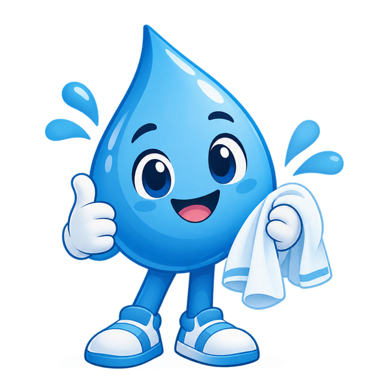
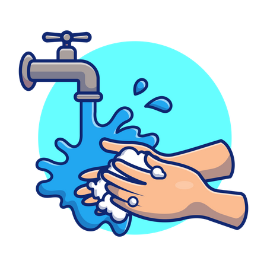

un espacio donde encontrarás consejos prácticos, recomendaciones claras y contenidos informativos diseñados para proteger tu bienestar y el de tu familia. Queremos ser tus aliados en la prevención de enfermedades, por eso te invitamos a descubrir la importancia de una buena higiene y un correcto lavado de manos. Explora nuestros contenidos, síguenos en nuestras redes y juntos construyamos un entorno más sano, seguro y saludable para todos.


la higiene no es solo una cuestión de estética o apariencia, sino un acto fundamental de cuidado y amor propio que nos permite vivir de forma más segura y saludable.
RecomendacionesHumedece tus manos con agua y aplica suficiente jabón. Lávalas durante 40 a 60 segundos para eliminar la suciedad y reducir los microorganismos.
Frota las palmas, el dorso de las manos, entre los dedos, debajo de las uñas y los pulgares. Estas zonas suelen quedar olvidadas durante el lavado.
Enjuaga bien tus manos y sécalas con una toalla limpia o desechable. Un buen secado completa el lavado y ayuda a mantener la higiene.